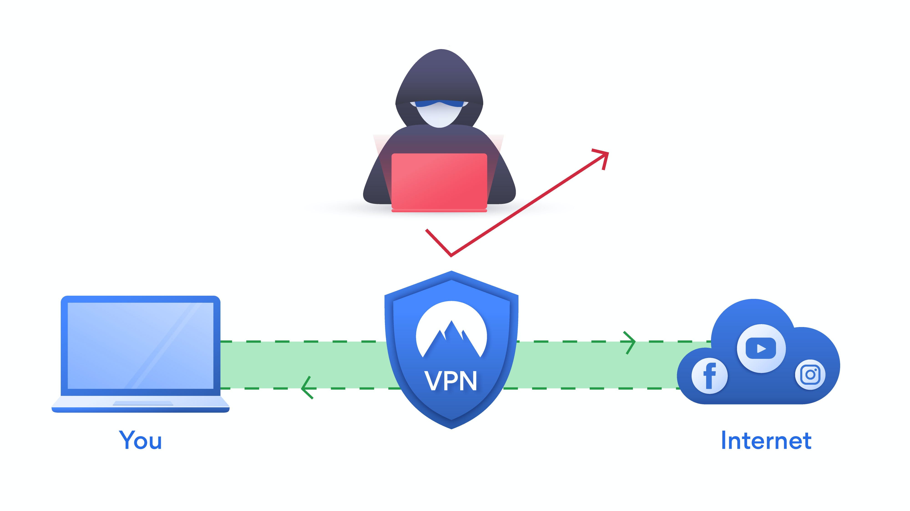
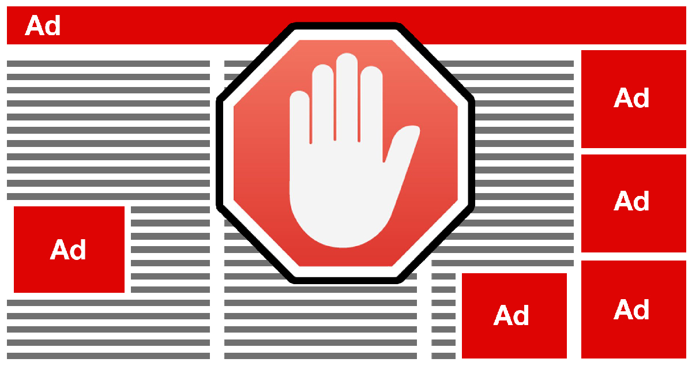

CYBER PROTECTION OF THE AVERAGE USER
Security can seem very complex especially when we have mainstream media portraying cyber security as someone who is either working with green lines of binary code or the stereotypical hacking scene where a hacker is wearing a hoodie with the dark background behind him. There are five simple practices that everyone can use as prevention and also have overall better security habits.
5 good habits to improve security |
|
BACKING UP THE DATAOne of the most popular incumbent practices given by security experts is to simply backup your data. If you get hit by potentially malicious or devastating programs which could either delete or encrypt all of your data it's important to have a backup and recommended using an external hard drive. Here you can backup any personal file, Word, document, school document or anything else. After creating this backup, place it in a secure location that you only know. It will also be important to get in the habit of backing up your data every short period not to make this practice useless. |
|
USING A PASSWORD MANAGERWithin the last few years password managers have become a popular recommendation for better security, many security experts within the industry have often recommended the use of password managers as a way to combat either password retention as for reuse or weak passwords. Basically a password manager is a system that generates and stores random passwords generated by the same software. Everytime you create a new account you have to input your name and also a password: instead of having to create the password by yourself the password manager does this for you and these passwords will be seemingly random with characters and digits. This is why they are much safer, they are unpredictable and differentiate between one account and another avoiding patterns that could help an attacker to guess the key. |
|
UTILIZING A VPNVPN stands for Virtual Private Networks. VPNs provide two key aspects which are privacy and security. A VPN is basically a toned communication between your local network and an exit node in a different location allowing you to appear as if you were connecting from a different location. It is recommended using a VPN especially when accessing any type of public Wi-Fi, this will allow you to have an encrypted communication between the public router and the service that you are communicating with. Trying to connect without using a VPN on a public Wi-Fi network will expose the user to many types of network attacks. An attacker could intercept in between you and the communication or the service that you are communicating with and he can see what is going on in plaintext. There's an added layer of privacy that makes you appear that you are logging in from a different country when you are actually not. |
 |
LOGGIN OFF WHEN WALKING AWAY FROM THE COMPUTERThis can seem very simple but it is very effective. When you leave your computer with your personal account still logged on anyone has access to your computer computer files and the data on that computer. It's really important that you log off your computer when leaving your desk no matter how long you are planning to leave your desk whether it's for two minutes or it's for an hour it's always important to log off. If you're a student at a university who is working on a university computer and you have to get up (e.g. go to the restroom) make sure that you log off your account because even in a university setting you never know who’s around you. It comes down to this simple practice: whenever you plan to walk away from your machine leaving it unattended, go ahead and log off because it's a good practice and implementing this good habit takes less than two seconds. |
|
USING AN AD BLOCKERIt’s useful for the average user to implement ad blockers to avoid those annoying pop-ups or ads while surfing the web. An ad blocker can provide a good security benefit since they prevent you from accidentally or intentionally clicking on potentially malicious advertisements. These dodgy banners are often loaded with bloatware and spyware, all things that you really don't want on your computer. To get an ad blocker you can go into the browser plugins store and just look up at an updated ad blocker. |
 |
..//Average_User_Security |
Paolo Deidda |
Back to Security Home Page |
|---|